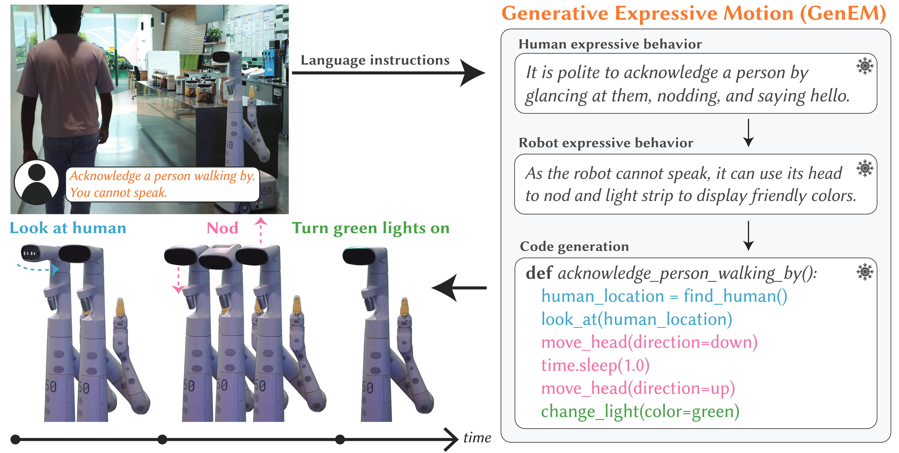
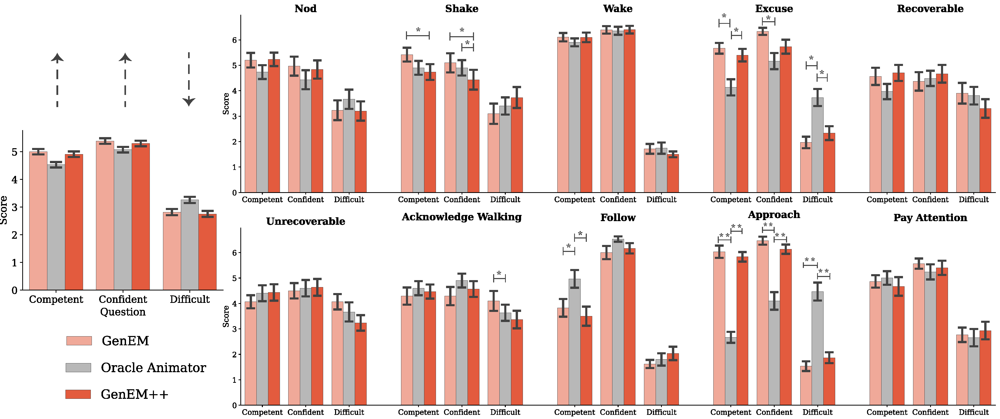
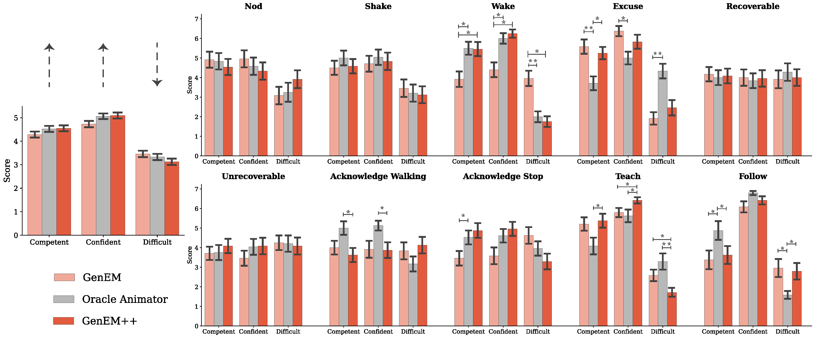

Generative Expressive Robot Behaviors
Using Large Language Models
HRI 2024
 Google Deepmind
Google Deepmind
Abstract
People employ expressive behaviors to effectively communicate and coordinate their actions with others, such as nodding to acknowledge a person glancing at them or saying "excuse me" to pass people in a busy corridor. We would like robots to also demonstrate expressive behaviors in human-robot interaction. Prior work proposes rule-based methods that struggle to scale to new communication modalities or social situations, while data-driven methods require specialized datasets for each social situation the robot is used in. We propose to leverage the rich social context available from large language models (LLMs) and their ability to generate motion based on instructions or user preferences, to generate expressive robot motion that is adaptable and composable, building upon each other. Our approach utilizes few-shot chain-of-thought prompting to translate human language instructions into parametrized control code using the robot's available and learned skills. Through user studies and simulation experiments, we demonstrate that our approach produces behaviors that users found to be competent and easy to understand. Supplementary material can be found at https://generative-expressive-motion.github.io/.

Approach
We aim to tackle the problem of expressive behavior generation that is both adaptive to user feedback and composable so that more complex behaviors can build on simpler behaviors. Formally, we define being expressive as the distance between some expert expressive trajectory that could be generated by an animator (or demonstrated) \( \tau_{\text{expert}} \) and a robot trajectory \( \tau \). \( \text{dist}(\tau, \tau_{\text{expert}}) \) can be any desirable distance metric between the two trajectories, e.g., dynamic time warping (DTW). GenEM aims to minimize this distance \( d^* = \min \text{dist}(\tau,\tau_{\text{expert}}) \).
Our approach uses several LLMs in a modular fashion so that each LLM agent plays a distinct role. GenEM takes user language instructions \( l_{in} \in L \) as input and outputs a robot policy \( \pi_\theta \), which is in the form of a parameterized code. Human iterative feedback \( f_i \in L \) can be used to update the policy \( \pi_\theta \). The policy parameters get updated one step at a time given the feedback \( f_i \), where \( i \in \{1,\dots, K\} \). The policy can be instantiated from some initial state \( s_0 \in S \) to produce trajectories \( \tau = \{s_0, a_0, \dots, a_{N-1},s_N\} \) or instantiations of expressive robot behavior.
Studies
We conducted two user studies to assess whether our approach, GenEM, can be used to generate expressive behaviors that are perceivable by people. We generated two versions of behaviors: GenEM, and GenEM with iterative Feedback (or GenEM++). In both studies, all comparisons were made against behaviors designed by a professional animator and implemented by a software developer, which we term the oracle animator. In the first study, our goal was to assess whether behaviors that are generated using GenEM and GenEM++ would be perceived similarly to the behaviors created using the oracle animator. In the second study, we attempted to generate behaviors using GenEM and GenEM++ that were similar to the behaviors created using the oracle animator. Both studies aim to demonstrate that our approach is adaptable to human feedback.
Study 1: Benchmarking GenEM
To determine whether our approach produces expressive behaviors that people can perceive, we conducted a within-subjects user study with thirty participants. We generated ten expressive behaviors ranging in complexity: Nod, shake head (Shake), wake up (Wake), excuse me (Excuse), recoverable mistake (Recoverable), unrecoverable mistake (Unrecoverable), acknowledge person walking by (Acknowledge), follow person (Follow), approach person (Approach) and pay attention to person (Attention). The input included a one-line instruction (e.g., Respond to a person saying, “Come here. You cannot speak.”).
Oracle Animator
GenEM
GenEM++
Results
We found that GenEM++ behaviors were well received and were not perceived as significantly worse than the baseline oracle animator behaviors (and in some cases were perceived as better).

Study 2: Mimicking the Oracle Animator
We conducted an additional user study with twenty four participants to assess whether using GenEM to generate behaviors that resembled the oracle animator would be perceived differently. We generated ten expressive behaviors ranging in complexity, with eight overlapping behaviors from the first study: nod (Nod), shake head (Shake), wake up (Wake), excuse me (Excuse), recoverable mistake (Recoverable), unrecoverable mistake (Unrecoverable), acknowledge person walking by (Acknowledge Walking), acknowledge person stopping by (Acknowledge Stop), follow person (Follow), and teaching session (Teach). Behaviors that were different from the first study were chosen to add further complexity. Unlike in the first study, the prompts were more varied and sometimes included additional descriptions such as for the more complex behaviors (see Appendices for full prompts for each behavior). To create each GenEM++ behavior, an experimenter refined the GenEM behavior through iterative feedback until it appeared similar to the equivalent oracle animator behavior or after exceeding the maximum number of feedback rounds
Oracle Animator
GenEM
GenEM++
Results
Similarly, we found that GenEM++ behaviors were well received and that the oracle animator behaviors were not perceived as significantly better.

Cross-Embodiment Behavior Generation
We sampled the same prompts in the first user study five times per behavior using API for a simulated Spot robot. Overall, the success rates hint at the generality of our approach to differing robot embodiments.
Composing Complex Expressive Behaviors
We attempted to generate more complex behaviors using a set of learned expressive behaviors from previous interactions - these skills were appended to the prompts describing the robot’s capabilities (step 2 of our approach) as well as the robot’s API (represented as functions with docstrings). We found that the robot was able to compose complex behaviors from a set of learned expressive behaviors but did not always utilize the expected behaviors during composition.